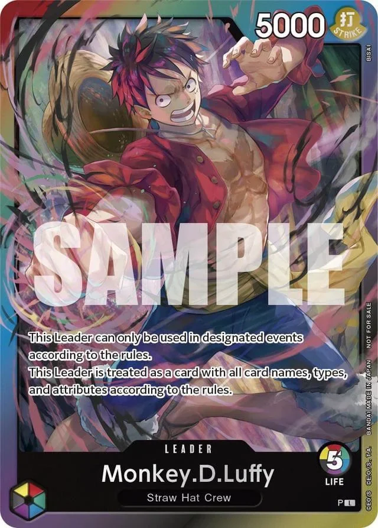

One Piece TCG cube
A small project of mine: a cube format for One Piece TCG, where players draft their decks from a shared pool instead of bringing their own.
- Format
- Draft, 8 players (or 4 with double pick)
- Card pool
- 540 cards (version 2, October 2026)
- Design goal
- Magic's cube archetypes, in One Piece's rules
The idea
A cube needs its own format rules and a curated card pool. I chose the cards and wrote the rules to adapt Magic deck archetypes to the One Piece ruleset.
Format rules
- One Leader for everyone. Every player uses Rainbow Luffy.
- Colours cost Life. You start with 6 Life if your deck has one colour, and 1 less for each colour beyond the first: 5 for two colours, 4 for three, and so on.
- The draft. Three packs of 16 cards. Pick 1 card and pass the rest, until the pack is gone. The first pack passes clockwise, the second counter-clockwise, the third clockwise again. That's 48 cards each, and you build a 30-card deck from them.
- Players. Made for 8 players. With 4, play double pick: the same rules, but you take 2 cards each time.


The Life rule is the cube's only colour restriction. You can play any colours you draft, but each extra colour costs you a Life.
The card list
The cube changes over time. The list is checked for changes every week, and each version is kept here, newest first.
| Version | Date | Cards | Changes | List |
|---|---|---|---|---|
| 2 | October 2026 | 540 | 313 added, 177 removed | Text |
| 1 | March 2025 | 404 | First list | Text |
Version 2, one copy of each card, grouped by set.